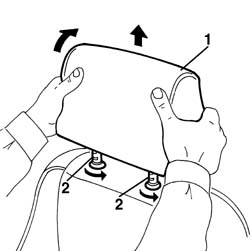
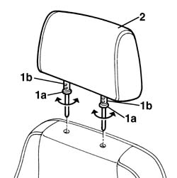

7045B10 l/h or r/h front seat head restraint - r+r
- Path
- Procedures > 70 FITTINGS > 7045 FRONT SEATS > 7045B front seat head restraint/arm rest > 7045B10 l/h or r/h front seat head restraint - r+r
- Kind
- repair procedure (removal / refitting; the operation number is the code)
- Applies to
- all engines; all production periods
- Interactive page
- https://sloeber94.github.io/elrnDB-a156/en/#/3238894
Applies to: all engines; all production periods
 Removing
Removing
 Refitting
Refitting1. Pull back the upper part of the headrest while lifting it completely.
2. Wheel the pins (about 45°) and remove the headrest.

Applies to: all engines; all production periods
Refitting
RemovingMake sure that the headrest is not damaged.
1. Wheel the pins (1a) so as to bring the notches (1b) on the front side.
2. Replace the headrest into its seat.

Topics that link to this page (8)
- 5580C92 connecting lead in seat for side air bag module r r
- 7045a38 device for driver`s seat squab lumbar adjustment - r r with seat removed
- 7045A39 device for driver`s seat squab lumbar adjustment - r r
- 7045A85 Front seat BACKREST COVER, left or right - R.R.
- 7045A88 Front seat BACKREST UPHOLSTERY, left or right - R.R. with seat removed
- 7045A89 Front seat BACKREST UPHOLSTERY, left or right - R.R .
- 7045B08 front head restraint pins - r r
- 7045B14 Front seat HEAD RESTRAINT TRIM, left or right - R.R.